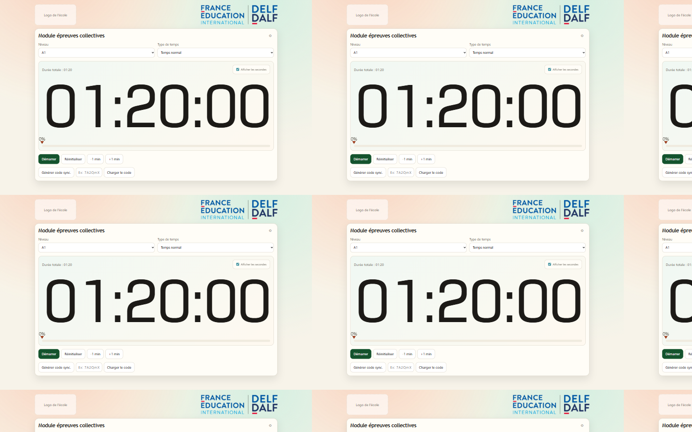
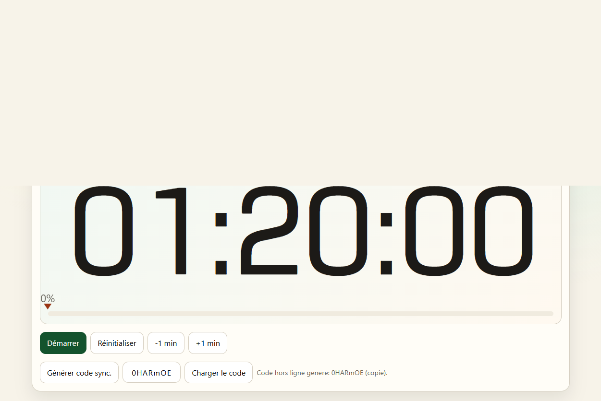
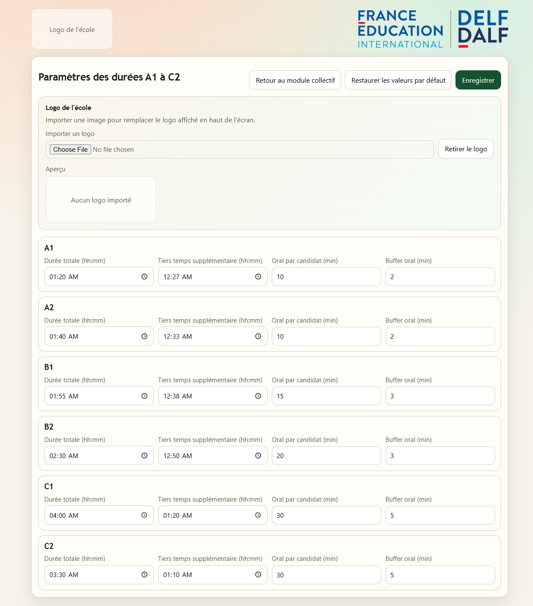

Manuel d'utilisation intuitif
Horloge DELF DALF
Version terrain, concise et pratique. Objectif : prise en main en moins de 5 minutes.
1) Démarrage rapide
Si l'application est deja installee
- Ouvrez Horloge DELF DALF.
- Vous arrivez directement sur le module des épreuves collectives.
Si vous lancez depuis le dossier projet
- Ouvrez un terminal dans le dossier du projet.
- Executez:
npm install
npm run desktop
Les réglages (durées, affichage des secondes, logo) sont sauvegardés localement automatiquement.
2) Utiliser le chrono des épreuves collectives
- Choisissez le niveau : A1, A2, B1, B2, C1 ou C2.
- Choisissez le type de temps : normal ou tiers temps.
- Lancez le chrono (demarrer/reprendre).
- Pendant l'épreuve : pause, reprise, +1 min, -1 min selon besoin.
- Option : activez/désactivez l'affichage des secondes.
- En fin de session : réinitialiser pour revenir à la durée du niveau choisi.
Bon réflexe avant de lancer
- Vérifier niveau et mode (normal/tiers temps).
- Faire un test de 1 minute.
- Vérifier la lisibilité de l'écran.
Quand utiliser pause ?
- Interruption exceptionnelle.
- Consigne organisationnelle.
- Incident technique court.

3) Synchroniser un chrono hors ligne (code court)
Permet de transférer l'état du chrono vers un autre poste, sans internet ni réseau local.
Exporter un code
- Sur le poste source, cliquez sur génération du code hors ligne.
- Notez ou copiez le code affiché.
Importer un code
- Sur le poste cible, saisissez le code.
- Cliquez sur importer.
- Le chrono est recalé automatiquement (en cours, en pause ou terminé).
Conseil : importez rapidement le code pour limiter l'écart de temps.

4) Paramétrer les durées (icône engrenage)
- Ouvrez les paramètres via l'icône engrenage.
- Pour chaque niveau, réglez :
- durée totale ;
- tiers temps supplémentaire ;
- durée oral par candidat ;
- buffer oral.
- Cliquez sur Enregistrer.
- Au besoin, utilisez Restaurer les valeurs par défaut.

5) Logo de l'école
- Dans Paramètres, importez un logo (bmp, jpg, jpeg, png, svg, tif, tiff).
- Contrôlez l'aperçu.
- Retirez le logo si nécessaire.
6) Dépannage express
Le chrono semble bloqué : vérifier si la session est en pause ou déjà arrivée à zéro.
Les réglages ont disparu : relancer sur le même poste et le même profil utilisateur.
Le logo n'apparaît pas : réimporter dans un format autorisé.
7) Check-list jour d'examen
- Test chrono effectué.
- Niveau et mode vérifiés.
- Poste de secours prêt.
- Procédure code hors ligne connue.
Fin du manuel.